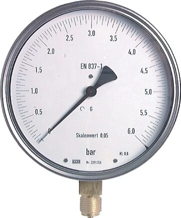

Cấp chính xác (accuracy class) là một trong những thông số dễ bị hiểu sai nhất khi chọn đồng hồ áp suất — và hiểu sai nó có thể khiến bạn hoặc mua thiếu chính xác cho phép đo quan trọng, hoặc trả tiền thừa cho độ chính xác không cần thiết. Bài viết giải thích class thực sự nghĩa là gì, cách nó liên hệ với dải đo, và cách chọn đúng cho từng ứng dụng. Fast Group Engineering là đại lý cung cấp hàng chính hãng WIKA (Germany) tại Việt Nam.

Gợi ý chọn nhanh
- Cần đọc áp suất tại chỗ trên máy, bơm, đường ống.
- Cần chọn đường kính mặt, dải đo, ren và vật liệu.
- Cần thay thế đồng hồ WIKA theo nameplate cũ.
- Part number hoặc ảnh nameplate.
- Dải đo, đường kính mặt, kiểu chân và ren kết nối.
- Môi chất, rung động, nhiệt độ và yêu cầu CO/CQ.
- Danh mục đồng hồ áp suất WIKA.
- Bài chọn đường kính mặt và ren.
- Bài cấp chính xác EN 837/Class.
Tóm tắt nhanh
- Class = sai số tối đa tính theo % của toàn thang đo (full scale).
- Class 2.5 = ±2.5% FS; Class 1.6 = ±1.6% FS; Class 1.0 = ±1.0% FS.
- Chọn dải đo sao cho áp làm việc ≈ 2/3 thang để giảm sai số tương đối.
- Càng chính xác càng đắt — chọn theo nhu cầu thực tế.

Cấp chính xác nghĩa là gì?
Theo tiêu chuẩn EN 837-1, sai số của đồng hồ được tính trên toàn dải đo (full scale), không phải trên giá trị đang đọc. Ví dụ đồng hồ 0–100 bar, class 1.6:
- Sai số tối đa = 1.6% × 100 bar = ±1.6 bar, cố định trên toàn thang.
Nghĩa là dù kim chỉ 10 bar hay 90 bar, sai số cho phép vẫn là ±1.6 bar. Đây chính là lý do không nên chọn thang quá lớn so với áp làm việc thực tế.
Bảng cấp chính xác phổ biến
| Class | Sai số (% FS) | Ứng dụng điển hình |
|---|---|---|
| 2.5 | ±2.5% | Khí nén, chỉ thị thông thường, Ø40–63 |
| 1.6 | ±1.6% | Công nghiệp phổ biến, Ø100 |
| 1.0 | ±1.0% | Yêu cầu chính xác hơn, Ø100–160 |
| 0.6 | ±0.6% | Đo chính xác |
| 0.25 / 0.1 | rất thấp | Fine measurement, kiểm định, phòng lab |
Đường kính mặt lớn (Ø100/160) thường đi kèm class tốt hơn vì thang chia rõ và cơ cấu chính xác hơn.
Vì sao chọn dải đo ở 2/3 thang?
Do sai số tính theo full scale, đọc ở đầu thang cho sai số tương đối rất lớn. Hãy so sánh cùng một đồng hồ 0–100 bar class 1.6 (±1.6 bar tuyệt đối):
| Áp đọc | Sai số tuyệt đối | Sai số tương đối |
|---|---|---|
| 10 bar (10% thang) | ±1.6 bar | ±16% |
| 65 bar (65% thang) | ±1.6 bar | ±2,5% |
Rõ ràng khi áp làm việc nằm ở khoảng 2/3 giữa thang, sai số so với giá trị đọc nhỏ hơn nhiều. Ngoài ra, kim hoạt động ở vùng tối ưu còn giảm mỏi ống Bourdon, kéo dài tuổi thọ. Ví dụ: áp làm việc 6 bar → chọn thang 0–10 bar (6 nằm ~60% thang) thay vì 0–25 bar.
Ảnh hưởng của nhiệt độ và rung động
Cấp chính xác ghi trên đồng hồ là ở điều kiện tham chiếu. Trong thực tế, nhiệt độ môi trường lệch khỏi chuẩn và rung động đều làm tăng sai số hiển thị. Với môi trường rung (bơm, máy nén), nên chọn đồng hồ đổ dầu glycerin để kim ổn định; với môi trường nhiệt cao, cần tính đến hệ số bù nhiệt hoặc dùng ống siphon để cách nhiệt.
Hiệu chuẩn và duy trì độ chính xác
Độ chính xác không phải là thứ "mua một lần dùng mãi". Với các điểm đo quan trọng hoặc yêu cầu QA/QC, đồng hồ cần được hiệu chuẩn định kỳ và có giấy chứng nhận. Khi đặt hàng, bạn có thể yêu cầu kèm calibration certificate; chúng tôi hỗ trợ cung cấp hồ sơ phù hợp yêu cầu nghiệm thu của nhà máy.
Cách chọn cấp chính xác (Checklist)
- [ ] Xác định yêu cầu đo: chỉ thị hay kiểm soát chính xác?
- [ ] Chọn class tương ứng (2.5 / 1.6 / 1.0...).
- [ ] Chọn dải đo để áp làm việc ≈ 2/3 thang.
- [ ] Chọn Ø mặt lớn hơn nếu cần đọc chính xác/từ xa.
- [ ] Cân nhắc fine measurement cho kiểm định, phòng lab.
Cấp chính xác ảnh hưởng thế nào đến chi phí?
Mỗi bậc nâng cấp cấp chính xác đều kéo theo chi phí cao hơn, vì đòi hỏi cơ cấu chuyển động tinh xảo hơn, thang chia mịn hơn và thường là đường kính mặt lớn hơn. Bí quyết tối ưu ngân sách không phải là luôn chọn class cao nhất, mà là chọn đúng class cho đúng vai trò của điểm đo. Một đồng hồ chỉ để công nhân liếc nhìn xem hệ thống có áp hay không thì class 2.5 là quá đủ; ngược lại, một điểm đo phục vụ nghiệm thu chất lượng hoặc cân chỉnh quá trình mới cần class 1.0 trở lên. Mua đúng nhu cầu giúp bạn tiết kiệm đáng kể trên đơn hàng số lượng lớn.
Gợi ý chọn class theo ngành
Trong khí nén và HVAC, class 1.6–2.5 thường phù hợp cho chỉ thị vận hành. Với thủy lực và máy công cụ, class 1.6 ở Ø63–100 là lựa chọn cân bằng. Ngành dầu khí và hóa chất ưu tiên class 1.0 kết hợp safety pattern và vật liệu inox cho các điểm đo quan trọng. Còn phòng kiểm định, thí nghiệm cần fine measurement class 0.6 hoặc thấp hơn kèm chứng chỉ hiệu chuẩn. Khi mô tả ngành và vai trò điểm đo, chúng tôi sẽ đề xuất tổ hợp class – Ø mặt – vật liệu tối ưu.
"Span" và "turndown" — hai khái niệm hay bị nhầm
Vì sai số của đồng hồ cơ tính theo full scale, đồng hồ áp suất cơ khí không có khái niệm "turndown" linh hoạt như transmitter điện tử — nghĩa là bạn không thể mua một thang rộng rồi thu hẹp lại mà vẫn giữ độ chính xác. Với đồng hồ cơ, độ chính xác gắn chặt với thang đo in trên mặt số, nên việc chọn đúng thang ngay từ đầu là quyết định quan trọng nhất. Nếu quá trình của bạn có nhiều mức áp khác nhau, hãy chọn thang bao phủ vùng áp làm việc quan trọng nhất ở khoảng 2/3 thang, thay vì cố chọn một thang thật rộng để "dùng cho mọi trường hợp".
Kiểm tra chéo cấp chính xác khi nhận hàng
Khi nghiệm thu, bạn có thể so sánh nhanh đồng hồ mới với một đồng hồ chuẩn hoặc thiết bị hiệu chuẩn ở vài điểm áp trong thang. Nếu sai lệch nằm trong giới hạn của class ghi trên mặt số, thiết bị đạt yêu cầu. Với các điểm đo quan trọng, hãy yêu cầu giấy chứng nhận hiệu chuẩn kèm theo để có bằng chứng khách quan phục vụ hồ sơ chất lượng.
Câu hỏi thường gặp
Class 1.6 và 1.0 chênh nhau nhiều không?
1.6% so với 1.0% FS — chọn 1.0 khi cần chính xác hơn, đổi lại chi phí cao hơn.
Sai số tính trên giá trị đọc hay toàn thang?
Trên toàn thang (full scale) theo EN 837-1.
Đồng hồ Ø63 có đạt class 1.0 không?
Thường Ø63 phổ biến ở class 1.6/2.5; class cao hơn thường ở Ø100/160.
Cần tư vấn chọn cấp chính xác & dải đo?
Gửi áp làm việc, yêu cầu độ chính xác và Ø mặt để được tư vấn và báo giá.
- Email: minhduc@fastgroup.vn · Zalo: (+84) 938 888 958
Fast Group Engineering – đại lý cung cấp hàng chính hãng WIKA (Germany) tại Việt Nam.
Bài liên quan: [Đồng hồ áp suất WIKA là gì] · [Chọn Ø mặt & ren] · [Tiêu chuẩn EN 837-1] · [Fine measurement gauge]